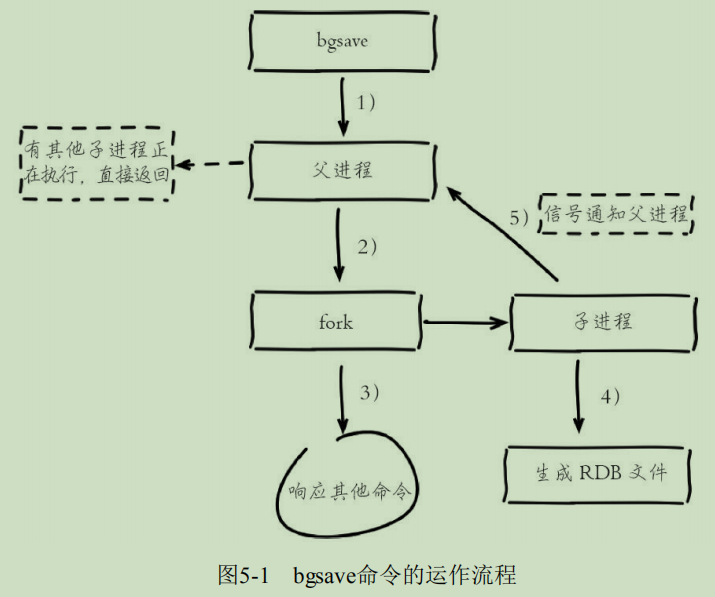
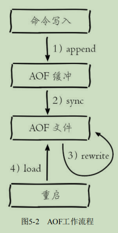

第 5 章 持久化
Redis 支持 RDB 和 AOF 两种持久化机制
5.1 RDB 方式
RDB 持久化是把当前进程数据生成快照保存到硬盘的过程。
5.1.1 触发机制（触发情形）
- 1、根据配置规则进行自动快照。
save m n
- 2、手动触发：用户执行 SAVE 或 BGSAVE 命令
- 3、执行 FLUSHALL 命令
- 4、从节点执行全量复制操作（replication）时。
- 5、执行 debug reload 命令重新加载 Redis 时
- 6、未开启 AOF 持久化时，执行 shutdown 命令
5.1.2 流程说明（bgsave 执行过程）

5.1.4 RDB 优缺点
-
优点：
- 全量复制，方便备份、恢复。
- 恢复速度远快于 AOF。
-
缺点：
- 无法实时持久化。
- 新老版本 RDB 文件格式不兼容。
5.2 AOF 方式
- AOF 以独立日志的方式记录每次写命令。主流方式。
5.2.1 使用 AOF（AOF 工作流程）

- append命令写入：命令是文本协议。
- sync文件同步：利用Linux的页缓冲区，先write到缓冲区，然后fsync强制阻塞写入磁盘。
- rewrite重写：（1）去掉无效的命令、超时的数据、合并命令来压缩AOF文件。（2）手动触发+自动触发。
- load重启加载：优先加载AOF文件，不存在AOF文件时加载RDB文件
第 6 章 复制
- Redis 提供了复制(replication) 功能，自动将更新的数据从主库同步到其他从库。
- 一主多从
- 原理：
- 从库启动后，向主库发送 SYNC 命令后，主库立即执行 RDB 快照，并缓存此期间接收到的命令；快照完成后，主库向从库发送快照文件和缓存命令；从库载入快照文件并执行缓存命令。完成复制初始化后，主库不断将写命令同步到从库。
- 主库之从库可以为下一级从库的主库。即可以构建多级复制的结构。
- 从库持久化
- 另一个相对耗时的操作是持久化，为了提高性能，可以通过复制功能建立一个(或若干个)从数据库，并在从数据库中启用持久化，同时在主数据库禁用持久化。当从数据库崩溃重启后主数据库会自动将数据同步过来，所以无需担心数据丢失。
- 当开启复制且主数据库关闭持久化功能时，一定不要使用 Supervisor 以及类似的进程管理工具令主数据库崩溃后自动重启。
- 哨兵能解决手工维护从库或主库的重启以及数据恢复的麻烦。
- 无硬盘复制
- 开启无硬盘复制选项后，Redis 在与从库进行复制初始化时将不会将快照内容存储到硬盘上，而是直接通过网络发送给从库，避免了硬盘的性能瓶颈。
- 增量复制
第 9 章 哨兵
- 哨兵包括两个功能：
- 1、监控主库和从库运行状态。
- 2、出现故障时，自动将从库转换为主库。
- 哨兵典型架构
- 多哨兵架构
第 10 章 集群
- 集群的特点在于拥有和单机实例同样的性能，同时在网络分区后能够提供一定的可访问性以及对主数据库故障恢复的支持。另外集群支持几乎所有的单机实例支持的命令，对于涉及多键的命令(如 MGET)，如果每个键都位于同一个节点中，则可以正常支持，否则会提示错误。除此之外集群还有一个限制是只能使用默认的 0 号数据库，如果执行 SELECT 切换数据库则会提示错误。
- 哨兵与集群是两个独立的功能，但从特性来看哨兵可以视为集群的子集，当不需要数据分片或者已经在客户端进行分片的场景下哨兵就足够使用了，但如果需要进行水平扩容，则集群是一个非常好的选择。